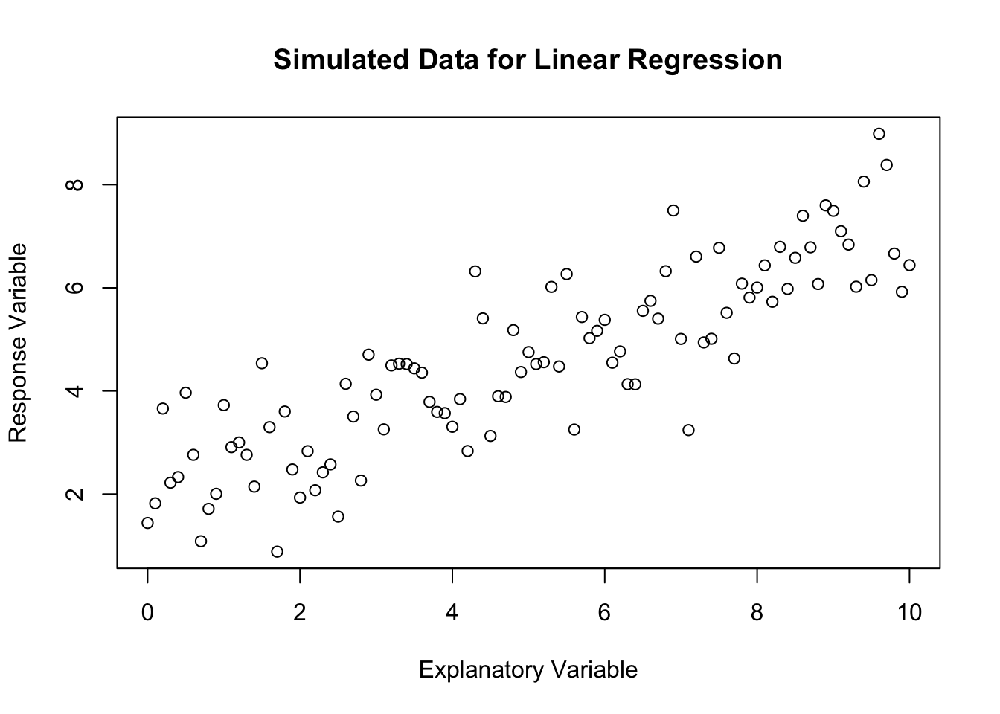
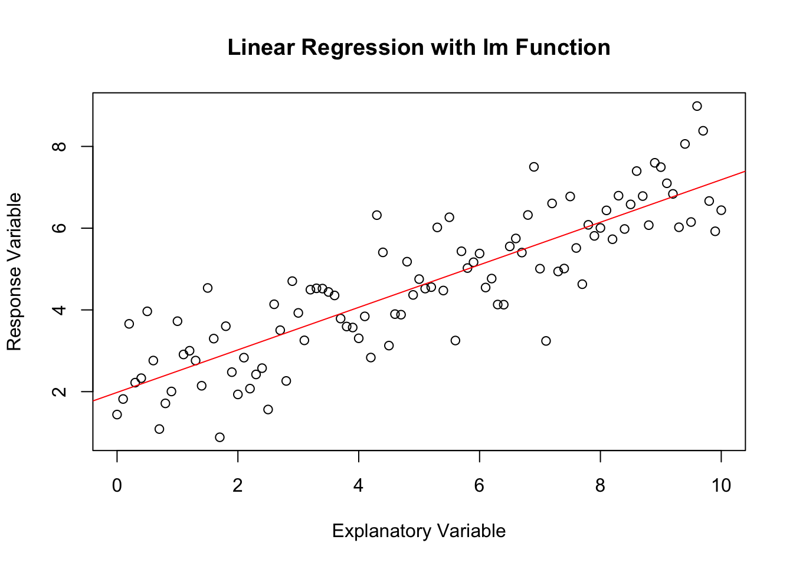

Linear regression is a fundamental statistical and machine learning method that models the relationship between a scalar response (or dependent variable) and one or more explanatory variables (or independent variables) using a linear function:
\[
Y = a + bX + \varepsilon, \quad \mathbb{E}(\varepsilon) = 0.
\]
Simulating Data for Linear Regression
To understand linear regression, it’s helpful to start by simulating some data that follows a linear model. In R, we can simulate data using the following approach:
# Set the seed for reproducibilityset.seed(123)# Simulate datan <-100# number of observationsx <-seq(0,10,10/n) # explanatory variablea <-2# interceptb <-0.5# slopesigma <-1# standard deviation of errors# Generate response variabley <- a + b * x +rnorm(n, mean =0, sd = sigma)
Warning in a + b * x + rnorm(n, mean = 0, sd = sigma): longer object length is
not a multiple of shorter object length
# Plotplot(x, y, main ="Simulated Data for Linear Regression", xlab ="Explanatory Variable", ylab ="Response Variable")

data <-data.frame(x, y)
Calculating Sample Covariance and Correlation Estimators
The relationship between the explanatory and response variables in linear regression can be quantified using the sample covariance and correlation. The formulae for these estimators are as follows:
Sample Correlation: \[
corr(X, Y) = \frac{cov(X, Y)}{s_X s_Y}
\] where \(s_X\) and \(s_Y\) are the sample standard deviations of \(X\) and \(Y\), respectively.
Now, let’s calculate the sample covariance and correlation for our generated data x and y:
# Calculate means of x and ymean_x <-mean(x)mean_y <-mean(y)# Calculate sample covariancecov_x_y_manual <-sum((x - mean_x) * (y - mean_y)) / (n -1)# Calculate sample correlationcorr_x_y_manual <- cov_x_y_manual / (sd(x) *sd(y))cat("Manually Calculated Sample Covariance: ", cov_x_y_manual, "\n")
R provides the lm function for fitting linear models. It simplifies the process of fitting a model to the data and making predictions. Here’s how to use it:
# Fit linear modelmodel <-lm(y ~ x, data = data)# Summary of the modelprint(model)
Call:
lm(formula = y ~ x, data = data)
Coefficients:
(Intercept) x
1.9811 0.5206
# Plot with regression lineplot(x, y, main ="Linear Regression with lm Function", xlab ="Explanatory Variable", ylab ="Response Variable")abline(model, col ="red")

The lm function automatically computes the best-fitting line through the data by minimising the sum of squared residuals. The summary function provides detailed information about the model, including the coefficients, their standard errors, and statistical significance.
Assignments
Your turn!
Please attempt these questions and write down your answers in the R Mardown workbook.
Run your codes in your workbook and compare your results with your deskmate.
Knit your workbook to publish a report in PDF or html.
1. Linear Regression Model
Generate a sample from the linear regression model:
Find the regression line to predict \(\hat{y}\) by \(x\), i.e. find \(\hat{a}_1\), \(\hat{b}_1\) such that
\[
Y = \hat{b}_1 X + \hat{a} _1
\]
manually using the covraiance and correlation estimators. Then verify the values using the lm function in R.
Find the regression line to predict \(\hat{x}\) by \(y\), i.e. find \(\hat{a}_2\), \(\hat{b}_2\) such that
\[
X = \hat{b}_2 Y + \hat{a}_2
\]
manually using the covraiance and correlation estimators. Then verify the values using the lm function in R.
Plot the data along with the two regression lines. Which regression line appears to be better?
The Least Squared Estimation can also help us derive the estimates of \(\hat{a}\) and \(\hat{b}\). We just need to find the value of \(a\) and \(b\) that minimizes the following expression: \[
\sum_{i=1}^{n} \Big( y_i-(a+bx_i) \Big)^2
\] Hint: Use the optim function.
2. Mean Squared Error
Consider a random sample \(X_1,X_2,\ldots,X_n\) from a normal distribution with mean \(\mu\) and variance \(\sigma^2\). We have the following two estimators of the population variance obtained from the given sample information. From our previous lab, we derived the Maximum Likelihood Estimator(MLE) of the population variance as: \[
1.\ \hat{\sigma}^2=\frac{1}{n}\sum_{i=1}^{n}(X_i-\overline{X})^2.
\] Additionally, we have the sample variance given by: \[
2.\ s^2=\frac{1}{n-1}\sum_{i=1}^{n}(X_i-\overline{X})^2,
\] where \(\overline{X}\) represents the sample mean.
Simulate a sample of 10 data from \(\text{N}(160,10^2)\). Calculate the values of these two estimators and their Mean Squared Error(MSE).
Try sample sizes of 100, 1000 and 10000, and show the results in a table. Can you provide an interpretation?